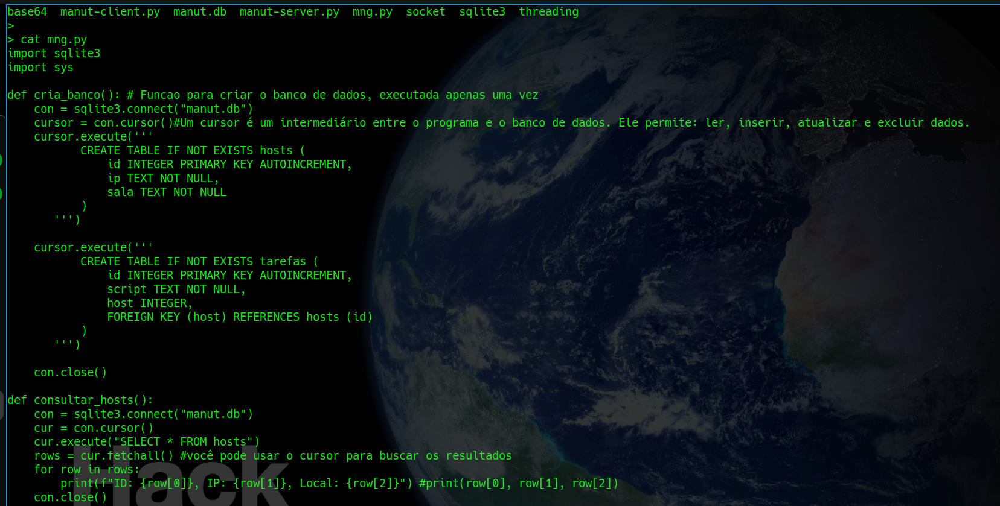
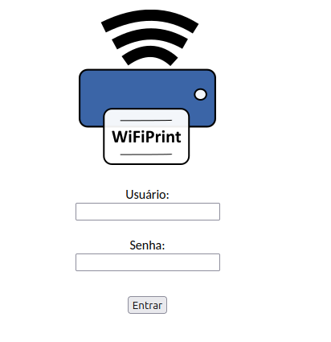

Bruno Caires
Sou um Analista de Suporte, formado técnico de informática pelo Cotil UNICAMP em 2003 e bacharel em ciências da computação em 2008, e especialista em redes de computadores pelo IC UNICAMP em 2013.
Sou um Analista de Suporte, formado técnico de informática pelo Cotil UNICAMP em 2003 e bacharel em ciências da computação em 2008, e especialista em redes de computadores pelo IC UNICAMP em 2013.
Manutenção e administração da rede de dados, servidores Linux e BSD, cluster de alto desempenho (AIX, Ubuntu, FreeBSD), e serviços de rede (samba, postfix, NFS, firewall),atendimento ao usuário.
Interface web feito em HTML e PHP que permite a impressão de documentos PDF.
>" style="width: 220px; height: 220px; margin-right: 5px;" class="imagem-com-borda">Script em python para fazer manutenções automáticas em máquinas com Linux, feito para instalar programas em laboratórios de informática: É possível adicionar scripts e dizer se será executado em uma determinada sala ou máquinas.
>" style="width: 220px; height: 220px; margin-right: 5px;" class="imagem-com-borda">Principais certificados relacionados há tecnologia.
>" style="width: 16px; height: 16px; margin-right: 5px;">Nivelamento do programa hackers do bem: formacao em ciberseguranca / Tecnologia da Informação e Comunicação
>" style="width: 16px; height: 16px; margin-right: 5px;">Do confinamento de processos ao microservices com Docker e Kubernetes
>" style="width: 16px; height: 16px; margin-right: 5px;">Segurança da rede / Tecnologia da Informação e Comunicação
>" style="width: 16px; height: 16px; margin-right: 5px;">CCNAv7: Introdução às redes / Tecnologia da Informação e Comunicação
>" style="width: 16px; height: 16px; margin-right: 5px;">Cybersecurity Essentials / Tecnologia da Informação e Comunicação
>" style="width: 16px; height: 16px; margin-right: 5px;">Projeto de Redes com Cabeamento Estruturado
>" style="width: 16px; height: 16px; margin-right: 5px;">IPv6 básico para redes de campus (com ênfase em serviços)